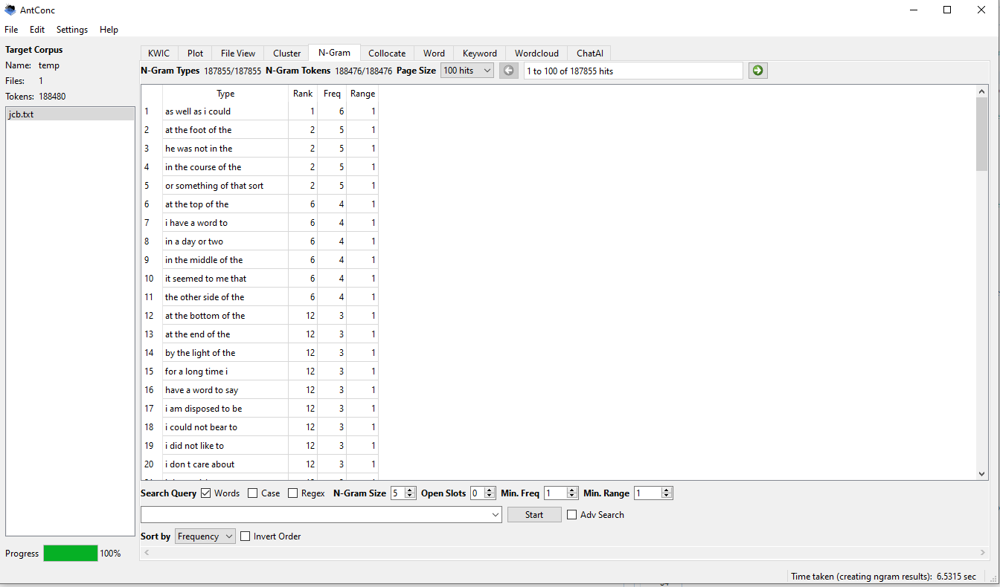

"Of the" rained supreme for the ngram 2 for both jcb.txt and lrt.txt. For the jcb.txt the ngram 3 phrase was "i could not" with 109 in the text. For ngram 4 in the course of was the most used phrase. For lrt.txt ngram 3 was there was a and ngram 4 it was "I don't know". It is clear that the second text is mysterical and has to do with not knowing information. After further study the 2nd text has been notated as the first book in Lord Of The Rings. The first was mainly about past information and not knowing. This makes me think it is a murder mystery or some type of mystery. What gives this away is the N-gram size 3 for the jcb.txt because it has "I could not", "I did not" and I don't as the popular 3 words frequency. I am assuming the texts are completely different and hold different values.

In comparing the patterns of both corpora the 5-gram results reveal distinct stylistic differences in how information is phrased. r jcb.txt, the most frequent 5-gram is "as well as i could," suggesting a more personal or first-person narrative tone centered on capability or effort. In contrast, lrt.txt (sadasdasd.PNG) leans toward a more descriptive or third-person perspective, with the top phrase being "it seemed to him that." While both texts share common prepositional phrases like "at the end of the" and "the other side of the," the variation in their top-ranked n-grams indicates that jcb.txt may be more character-driven, while lrt.txt focuses more on observational or atmospheric storytelling.